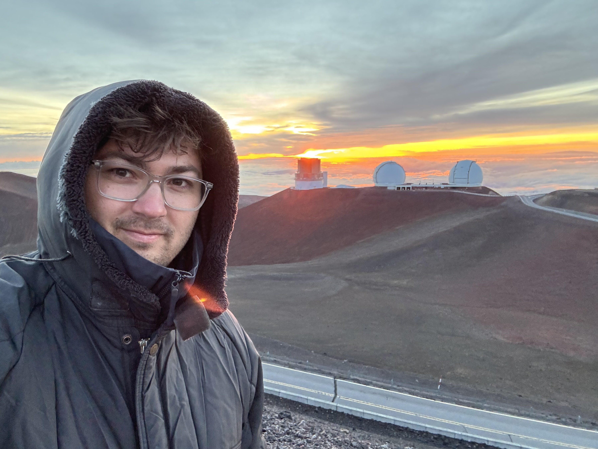

Janos Meny
About Me
Hi, I'm Janos! I work on geometry processing, optimization, and computer graphics.
I studied math at the University of Bonn. In my bachelor's I did algebraic geometry, and in my master's I switched to PDE-constrained optimization.
These days I work on Roblox's game engine. Mostly that means geometry processing, but I also get to work on collision, networking, and graphics. Before that I was at nTop, building SDF-based modeling tools that make it easy to design complex, high-performance parts.

Projects
-
YUBI gripper for the YAM arm Toyota and AIRoA's open YUBI gripper, adapted to work on the YAM arm. GitHub
Publications
-
Solid-Shell Labeling for Discrete Surfaces Siqi Wang, Janos Meny, Izak Grguric, Mehdi Rahimzadeh, Denis Zorin, Daniele Panozzo, Hsueh-Ti Derek Liu. SIGGRAPH Asia 2025. Paper Code Video
-
A Phase-Field Approach to Variational Hierarchical Surface Segmentation Janos Meny, Martin Rumpf, Josua Sassen. Computer Aided Geometric Design, 2021. Paper Code
Contact
I'm always happy to chat about math, graphics, or whatever you're building, so feel free to reach out!